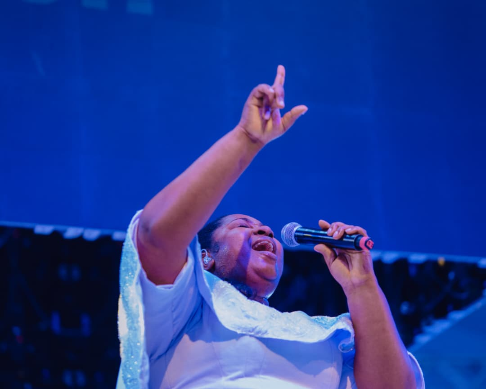

Media
Seen, and heard.
Her latest videos, straight from YouTube — and the photographs from the nights themselves.
Watch
The films.
Straight from her YouTube channel, newest first. A new upload appears here on its own.
See
The nights, in stills.
Photographs from the events. Select any frame to see it full size, then use the arrow keys or swipe to move through the set.